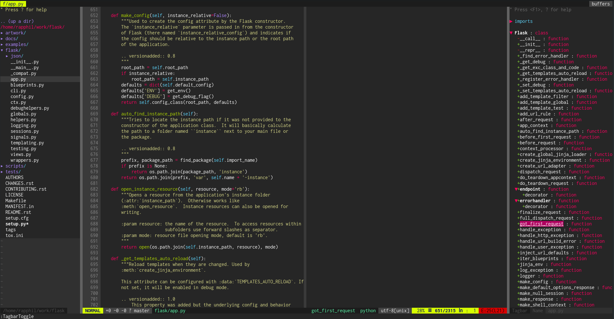

Introduction
The motivation for this project is the fact that Vim is a powerful tool, but it takes some time to master. With Vim and some plugins it is possible to create a fully functional Python IDE with several capabilities so that it is possible to leverage a workflow that does not require mouse.

Installation
Pre requirements
For Ubuntu distros
sudo apt install libncurses5-dev libgnome2-dev libgnomeui-dev \
libgtk2.0-dev libatk1.0-dev libbonoboui2-dev \
libcairo2-dev libx11-dev libxpm-dev libxt-dev python-dev \
python3-dev git
For Fedora distros
sudo dnf install -y ctags git python python-devel \
python3 python3-devel tcl-devel
Installation process
git clone https://github.com/rapphil/vim-python-ide.git && \
cd vim-python-ide && ./install.sh
Features
Please check the available features and the plugins that enable them.
Syntax Highlighting
Syntax highlighting for several languages, besides Python.
Powered by:
Color Themes
Several popular color schemes:
- Monokai
- Gruvbox
- Much more
Powered by:
Project Navigation
Easily navigate your project using:
- File tree explores
- Fuzzy finder based on the file names
- File structure (classes, functions, methods).
Powered by:
Powerfull Full Text search
- Full text search based on both exact match and fuzzy finder capabilities
- Extremely fast.
Powered by:
Real time linting
Lint source files in real time an check for errors and warnings.
Powered by: * Ale
Code navigation
- Go to function definitions and check functions parameters and docstrings easily.
Powered by:
Code refactoring
Extract methods, variables and rename functions easily.
Powered by:
Code completion
Use hints and dialog boxes to speed your development using code completion.
Powered by:
Snippets
Snippets save time while you type and creates standardization for your code.
Powered by:
Git Integration
Perform git operations and highlight changes in the repo.
Powered by: